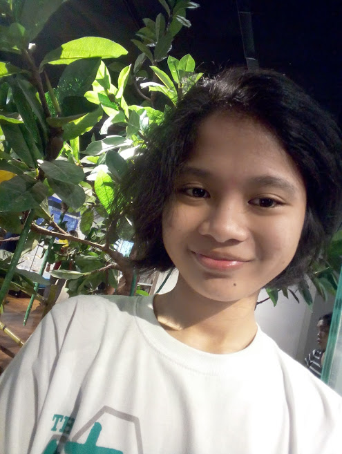

Journey of Myself
Childhood Years
 Let’s talk about myself, who am I? Well, I’m Zairyl Faye Repil Marinas.1
Others call me by Zairyl, Zai or Faye, it depends on how close we are.2 I was born on the 4th day in the month of February,
on the year of the dragon, 2000 in Antipolo City, Rizal.3 I started going to school in King’s Little Jewel Learning Center when I was
5 years old together with my older sister.4 Our school is just behind our house, like few street apart.5 I remembered when
we don’t have guardian to fetch us in school, we’ll just run to escape from the guard when his not looking around.6 Then the next day,
my parents will receive warning or notice because of what we’ve done.7 So they update the guardian ID of us and put the picture and name
of our cousin that is also my godmother.8 Afterwards same scenario happened but we go along with our friend’s guardian who is our neighbor
also, but luckily my parents didn’t receive any notice.9 Looking back in the past, makes me laugh because of crazy things we did with my sister.10
Let’s talk about myself, who am I? Well, I’m Zairyl Faye Repil Marinas.1
Others call me by Zairyl, Zai or Faye, it depends on how close we are.2 I was born on the 4th day in the month of February,
on the year of the dragon, 2000 in Antipolo City, Rizal.3 I started going to school in King’s Little Jewel Learning Center when I was
5 years old together with my older sister.4 Our school is just behind our house, like few street apart.5 I remembered when
we don’t have guardian to fetch us in school, we’ll just run to escape from the guard when his not looking around.6 Then the next day,
my parents will receive warning or notice because of what we’ve done.7 So they update the guardian ID of us and put the picture and name
of our cousin that is also my godmother.8 Afterwards same scenario happened but we go along with our friend’s guardian who is our neighbor
also, but luckily my parents didn’t receive any notice.9 Looking back in the past, makes me laugh because of crazy things we did with my sister.10
Later on both of us transferred in different school and I was transferred in Bond of Love Nazarene Christian School to take Preparatory.11
I thought when I finish preparatory, they will also enroll me where my sister was enrolled but sadly they enrolled me in public school where my father
graduated elementary maybe because of my attitude or I don’t know what’s their mindset that day.12 When I took an exam there, I have a cast
on my left arm because of an accident, even though it’s public they have pilot section or called FL which is known as fast learner that’s why I took an
exam for that.13
 While in 3rd grade, our advisor let us out of the classroom, literally half of the class because where playing
while she’s not around and saying there’s a ghost when you looked at the mirror near her table.14 Our parents saw us, sitting
outside the classroom’s corridor when it’s time to fetch us so our adviser talk to our parents and obviously they scold us while walking home.15
We used to be like star section because we have separate building compare to the other sections.16 I learned a lot there, like being a little independent
kid because almost teachers who are assigned to us have a saying “FL kayo kaya nyo na yan”.17 That make us confused because we’re still student who deserve
to learn new things from their teachers and they should motivate us more right.18
While in 3rd grade, our advisor let us out of the classroom, literally half of the class because where playing
while she’s not around and saying there’s a ghost when you looked at the mirror near her table.14 Our parents saw us, sitting
outside the classroom’s corridor when it’s time to fetch us so our adviser talk to our parents and obviously they scold us while walking home.15
We used to be like star section because we have separate building compare to the other sections.16 I learned a lot there, like being a little independent
kid because almost teachers who are assigned to us have a saying “FL kayo kaya nyo na yan”.17 That make us confused because we’re still student who deserve
to learn new things from their teachers and they should motivate us more right.18
 I experience there to fix a broken chair, cook, use a sewing machine and
traditional sewing, and make recycled papers out of crumpled papers with writing or drawing, recycled lantern that is made out of papers too, of course with the help of
my mother because it’s too difficult way back then.19 I learned a lot and make happy memories there until I graduated elementary in 2013.20
In addition, in the middle of my 5th grade, I started to study and participate music camps.21 Every summer, me and my sisters are still studying but focus
only in music.22
I experience there to fix a broken chair, cook, use a sewing machine and
traditional sewing, and make recycled papers out of crumpled papers with writing or drawing, recycled lantern that is made out of papers too, of course with the help of
my mother because it’s too difficult way back then.19 I learned a lot and make happy memories there until I graduated elementary in 2013.20
In addition, in the middle of my 5th grade, I started to study and participate music camps.21 Every summer, me and my sisters are still studying but focus
only in music.22
Teenage Years

Junior high came, after I graduated elementary I didn’t know what will happen.1 So I took an exam for
me to qualify in pilot section, still in public high school known as Antipolo National High School which is the oldest
and 1st high school build in city of Antipolo.2 I also took an exam in San Jose National High School to qualify
also in pilot section known as STE Program.3 I both passed, and I’m really confused where to enroll.4
Sounds funny but when the school year started, I went to Antipolo National High School in the morning and
San Jose National High School in the afternoon.5 Yes, it’s true hahahaha I even received books in
both schools.6 That’s my routine in one and half week of school, I guess.7 Sometimes, alternate,
because my schedule in two schools was whole day.8 I remembered, I heard one of my classmate said
that, his assuming that I will be absent on the next day.9 Hearing them makes me laugh hard.10
My room in Antipolo National High School is really far from gate.11 Every morning I walk fast I could,
even running so that I will not be late.12 Do you want to know how many steps, stairs from our classroom?
I guess, estimated around 200-250 steps.13 It’s really far you know, it also affects the landscape of the area.14
The day came, I’m really exhausted.15
 I got flu, my mother was little bit annoyed to me because I can’t even
decide where to study.16 So in the middle of 2nd week, I ended up in San Jose National High School because
it’s nearer than Antipolo National High School from our house.17 The books I received from ANHS was returned
by my sister.18 She also told me that one of my teacher there is our relative and she’s looking for me.19
I just laughed and a little bit shy of course.20 There are two sections of STE there, and all the time it’s like
we’re both competing but we’re still friends to one another.21 Every year, we are shuffled so we actually know
each other very much until grade 10.22 Every year, we also have research there so all of us are used to make
research but all connected to science and technology because we’re under STE program.23
I got flu, my mother was little bit annoyed to me because I can’t even
decide where to study.16 So in the middle of 2nd week, I ended up in San Jose National High School because
it’s nearer than Antipolo National High School from our house.17 The books I received from ANHS was returned
by my sister.18 She also told me that one of my teacher there is our relative and she’s looking for me.19
I just laughed and a little bit shy of course.20 There are two sections of STE there, and all the time it’s like
we’re both competing but we’re still friends to one another.21 Every year, we are shuffled so we actually know
each other very much until grade 10.22 Every year, we also have research there so all of us are used to make
research but all connected to science and technology because we’re under STE program.23